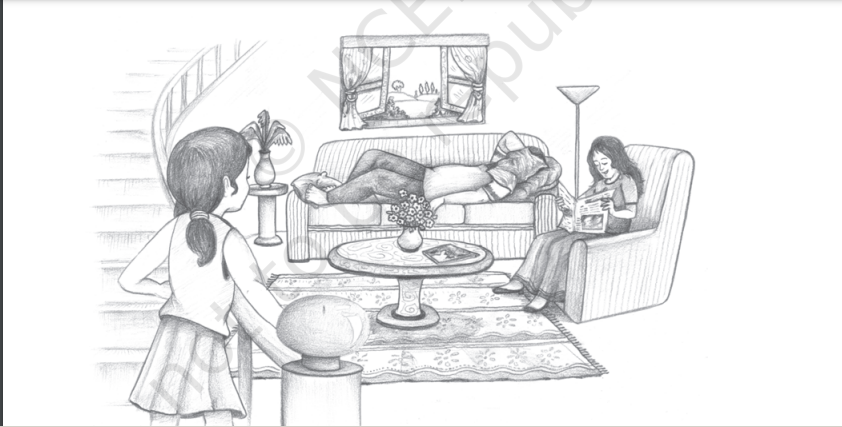
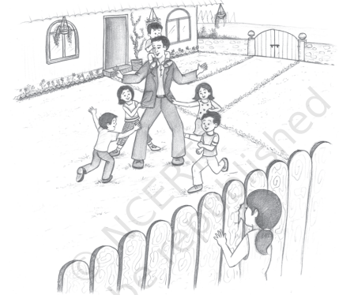

BEFORE YOU READ
• Do you feel you know your parents better now, than when
you were much younger? Perhaps you now understand the
reasons for some of their actions that used to upset you earlier.
• This story about a little girl whose feelings for her father
change from fear to understanding will probably find an echo
in every home
TO the little girl he was a figure to be feared and
avoided. Every morning before going to work he came
into her room and gave her a casual kiss, to which
she responded with “Goodbye, Father”. And oh,
there was a glad sense of relief when she heard the
noise of the carriage growing fainter and fainter
down the long road!
In the evening when he came home she stood
near the staircase and heard his loud voice in the
hall. “Bring my tea into the drawing-room... Hasn’t
the paper come yet? Mother, go and see if my paper’s
out there — and bring me my slippers.”
“Kezia,” Mother would call to her, “if you’re a good
girl you can come down and take off father’s boots.”
Slowly the girl would slip down the stairs, more
slowly still across the hall, and push open the
drawing-room door.
By that time he had his spectacles on and looked
at her over them in a way that was terrifying to
the little girl.
“Well, Kezia, hurry up and pull off these boots
and take them outside. Have you been a good
girl today?”
“I d-d-don’t know, Father.”“You d-d-don’t know? If you stutter like that
Mother will have to take you to the doctor.”
3. She never stuttered with other people — had quite
given it up — but only with Father, because then
she was trying so hard to say the words properly.
“What’s the matter? What are you looking so
wretched about? Mother, I wish you taught this child
not to appear on the brink of suicide... Here, Kezia,
carry my teacup back to the table carefully.”
He was so big — his hands and his neck,
especially his mouth when he yawned. Thinking
about him alone was like thinking about a giant.
4. On Sunday afternoons Grandmother sent her down
to the drawing-room to have a “nice talk with Father
and Mother”. But the little girl always found Mother
reading and Father stretched out on the sofa, his
handkerchief on his face, his feet on one of the best
cushions, sleeping soundly and snoring.

She sat on a stool, gravely watched him until he
woke and stretched, and asked the time — then
looked at her.
“Don’t stare so, Kezia. You look like a little
brown owl.”
One day, when she was kept indoors with a cold,
her grandmother told her that father’s birthday was
next week, and suggested she should make him a
pin-cushion for a gift out of a beautiful piece of
yellow silk.
Laboriously, with a double cotton, the little girl
stitched three sides. But what to fill it with? That
was the question. The grandmother was out in the
garden, and she wandered into Mother’s bedroom
to look for scraps. On the bed-table she discovered
a great many sheets of fine paper, gathered them
up, tore them into tiny pieces, and stuffed her case,
then sewed up the fourth side.
That night there was a hue and cry in the house.
Father’s great speech for the Port Authority had
been lost. Rooms were searched; servants
questioned. Finally Mother came into Kezia’s room.
“Kezia, I suppose you didn’t see some papers on
a table in our room?”
“Oh yes,” she said, “I tore them up for my
surprise.”
“What!” screamed Mother. “Come straight down
to the dining-room this instant.”
And she was dragged down to where Father was
pacing to and fro, hands behind his back.
“Well?” he said sharply.
Mother explained.
He stopped and stared at the child.
“Did you do that?”
“N-n-no”, she whispered.
“Mother, go up to her room and fetch down the
damned thing — see that the child’s put to bed
this instant.”
Crying too much to explain, she lay in the shadowed
room watching the evening light make a sad little
pattern on the floor.
Then Father came into the room with a ruler in
his hands.
“I am going to beat you for this,” he said.
“Oh, no, no”, she screamed, hiding under the
bedclothes.
He pulled them aside.
“Sit up,” he ordered, “and hold out your hands.
You must be taught once and for all not to touch
what does not belong to you.”
“But it was for your b-b-birthday.”
Down came the ruler on her little, pink palms.
Hours later, when Grandmother had wrapped her
in a shawl and rocked her in the rocking-chair, the
child clung to her soft body.
“What did God make fathers for?” she sobbed.
“Here’s a clean hanky, darling. Blow your nose.
Go to sleep, pet; you’ll forget all about it in the
morning. I tried to explain to Father but he was too
upset to listen tonight.”
But the child never forgot. Next time she saw
him she quickly put both hands behind her back
and a red colour flew into her cheeks.
The Macdonalds lived next door. They had five
children. Looking through a gap in the fence the
little girl saw them playing ‘tag’ in the evening.
The father with the baby, Mao, on his shoulders,
two little girls hanging on to his coat pockets
ran round and round the flower-beds, shaking
with laughter. Once she saw the boys turn the
hose on him—and he tried to catch them laughing
all the time.
Then it was she decided there were different
sorts of fathers.
Suddenly, one day, Mother became ill, and she
and Grandmother went to hospital.
The little girl was left alone in the house with
Alice, the cook. That was all right in the daytime,

but while Alice was putting her to bed she grew
suddenly afraid.
“What’ll I do if I have a nightmare?” she asked. “I
often have nightmares and then Grannie takes me
into her bed—I can’t stay in the dark—it all gets
‘whispery’…”
“You just go to sleep, child,” said Alice, pulling
off her socks, “and don’t you scream and wake your
poor Pa.”
But the same old nightmare came — the butcher
with a knife and a rope, who came nearer and
nearer, smiling that dreadful smile, while she could
not move, could only stand still, crying out,
“Grandma! Grandma!” She woke shivering to see
Father beside her bed, a candle in his hand.
“What’s the matter?” he said.
“Oh, a butcher — a knife — I want Grannie.” He
blew out the candle, bent down and caught up the
child in his arms, carrying her along the passage
to the big bedroom. A newspaper was on the bed.
He put away the paper, then carefully tucked up
the child. He lay down beside her. Half asleep still,
still with the butcher’s smile all about her it seemed,
she crept close to him, snuggled her head under
his arm, held tightly to his shirt.
Then the dark did not matter; she lay still.
“Here, rub your feet against my legs and get
them warm,” said Father.
Tired out, he slept before the little girl. A funny feeling
came over her. Poor Father, not so big, after all —
and with no one to look after him. He was harder
than Grandmother, but it was a nice hardness. And
every day he had to work and was too tired to be a
Mr Macdonald… She had torn up all his beautiful
writing… She stirred suddenly, and sighed.
“What’s the matter?” asked her father. “Another
dream?”
“Oh,” said the little girl, “my head’s on your heart.
I can hear it going. What a big heart you’ve got,
Father dear.”
-KATHERINE MANSFIELD